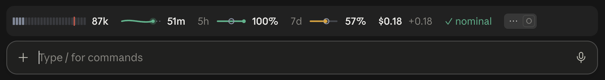
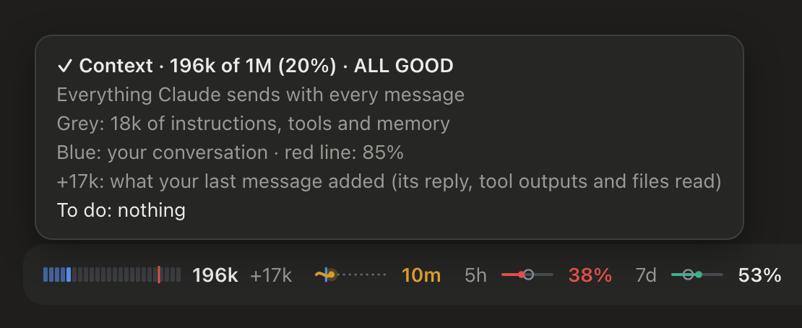
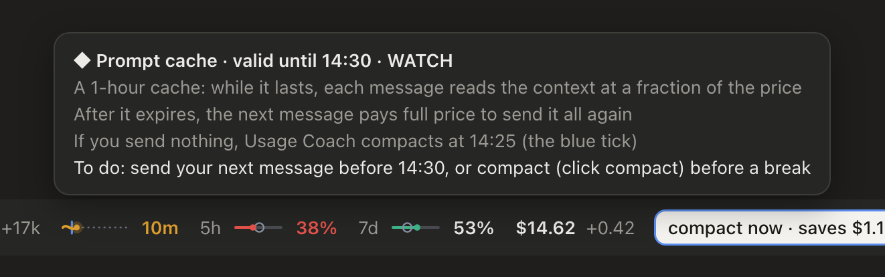
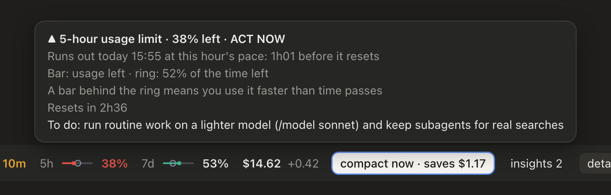
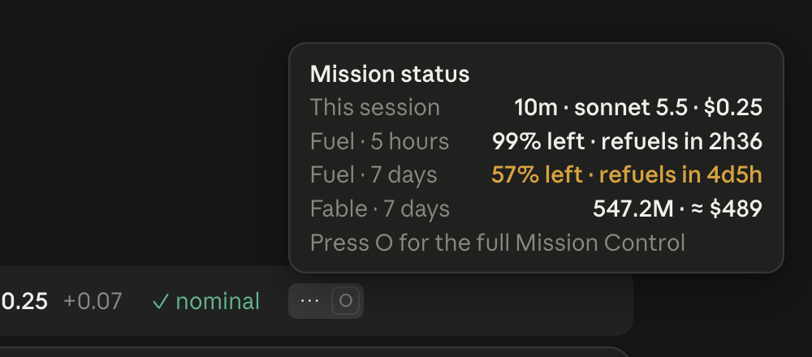
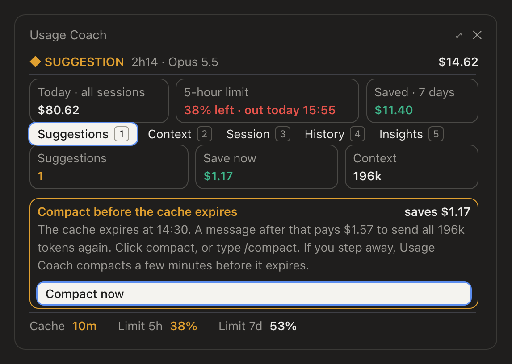
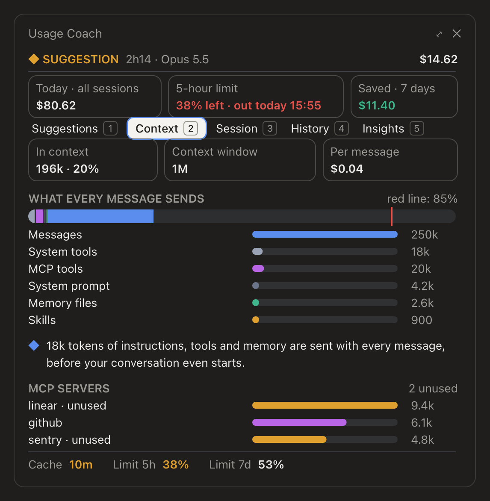
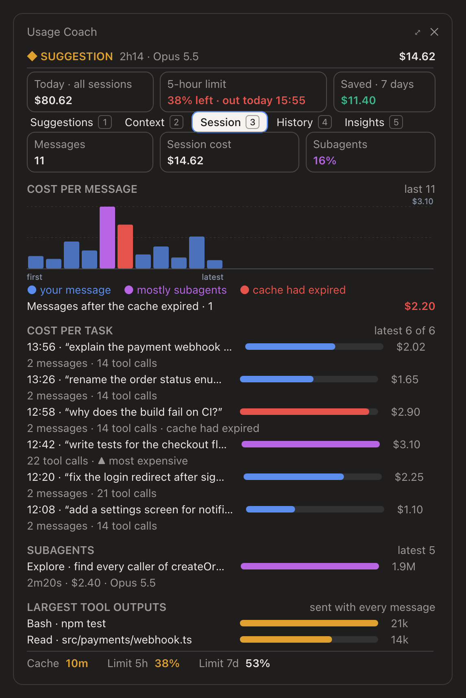
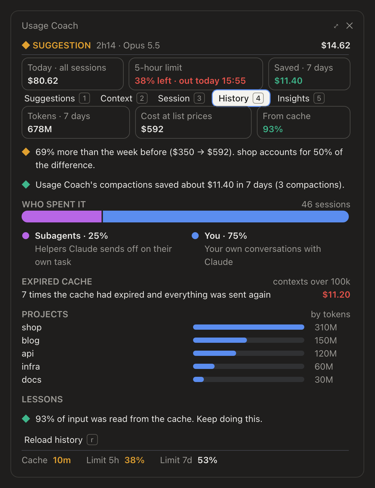
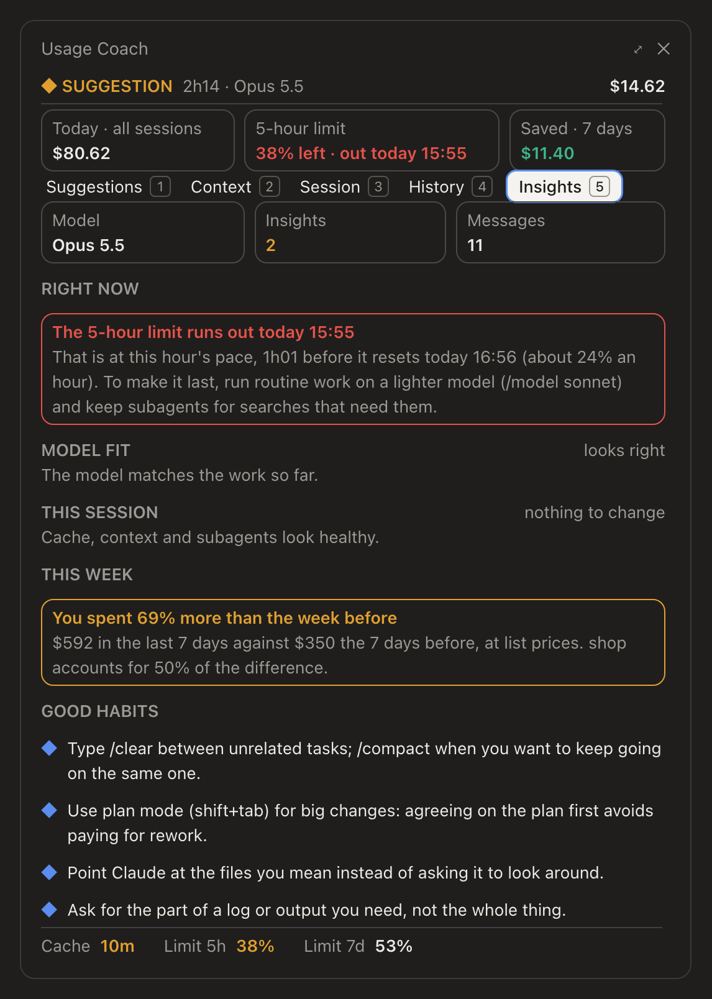

Usage
Coach
See where your tokens go, and the one change that saves the most right now. One strip above the prompt, one side pane, and an automatic compact before the prompt cache expires.

The strip above the prompt (demo data): context · prompt cache · usage limits for 5 hours and 7 days · session cost · suggestion · insights · detailsFive readings and a suggestion
What every message sends, against the model's context window. Grey is instructions, tools and memory, blue your conversation, a red line at 85% marks where compacting pays off.
Time left before the prompt cache expires. While it lasts, each message reads the context at a fraction of the price. After it expires, the next message pays to send it all again.
Usage left in the 5-hour and weekly limits, against the time left. At the current pace it says when each one runs out, and warns when that comes before it resets.
What the session has cost so far at list prices, what the last message added, and what the last task cost.
The single change that saves the most right now, with a button to run it. ✓ all good means nothing needs doing. A step Claude keeps failing comes first.
Hover for session time, both usage limits with their reset times, and your Fable use this week. Click it for the pane; the insights button opens Insights.
Every number explains itself

Context. How much every message sends, and what it is made of.

Prompt cache. The exact time the cache is valid until.

Usage limits. Usage left, time left in the window, when it resets, and when it runs out at this pace.

Session status. The whole picture in one card, Fable included.
Five tabs, one question: where did it go?
Suggestions
Every change worth making now, ranked by money saved. Compact now works even mid-answer: it is queued and runs when Claude finishes.

Context
What every message sends, by Claude's own categories, and which MCP servers go unused but are still sent with every message.

Session
The cost of each message and of each task in this session, which were mostly subagents, and which came after the cache expired.

History
The last 7 days across your projects: tokens, cost at list prices, cache share, who spent it, the change against the week before, and lessons to apply.

Insights
What needs you right now: a usage limit that runs out before it resets, or a step Claude keeps failing. Then whether the model fits the work, your week against the one before, and habits that keep sessions cheap.

Today, on every tab
Three numbers above the tabs: today's cost across sessions, the 5-hour limit with when it runs out at this pace, and what Usage Coach's compactions saved over 7 days. The welcome card explains the strip the first time.
Step away. Come back for less.
A large session left alone is compacted 5 minutes before its 1-hour prompt cache expires. The next message pays for a short summary instead of sending the whole conversation again.
Yours to tune
Session budget ($100), the smallest saving worth suggesting ($1), when idle compact runs (5 min before the cache expires, 0 turns it off) and the smallest conversation worth compacting (40k tokens). All in the plugin's settings.